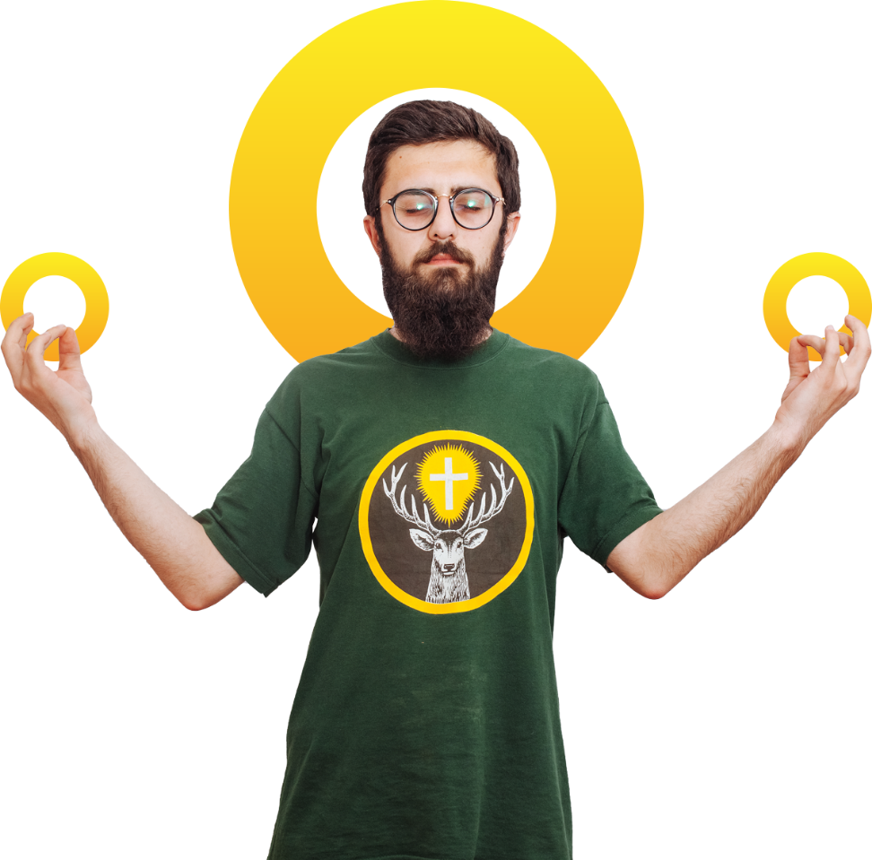

I'm Nikolozoid,
Graphic designer, illustration-lover and just a bearded guy with over 4 years experience in design and tech world.
I've worked on a variety projects and teams ranging from personal startups to one of the leading media platform in Georgia.
I believe, that design is a powerful tool to change the world and make it better place to live, laugh and love each other.
I'm comfortable working on a range of projects from social media campaings to branding, logos, illustrations and e.t.c. My life goal is to be as unique as possible in every aspect of living, working or anything else.
Outside of work I find inspiration through reading, writing some kind of stories about me and the stuff, listening experimental electronic music artists and walking in grey-colored districts in my town and finding some cool highlights in this area.
I believe, that design is a powerful tool to change the world and make it better place to live, laugh and love each other.
I'm comfortable working on a range of projects from social media campaings to branding, logos, illustrations and e.t.c. My life goal is to be as unique as possible in every aspect of living, working or anything else.
Outside of work I find inspiration through reading, writing some kind of stories about me and the stuff, listening experimental electronic music artists and walking in grey-colored districts in my town and finding some cool highlights in this area.
